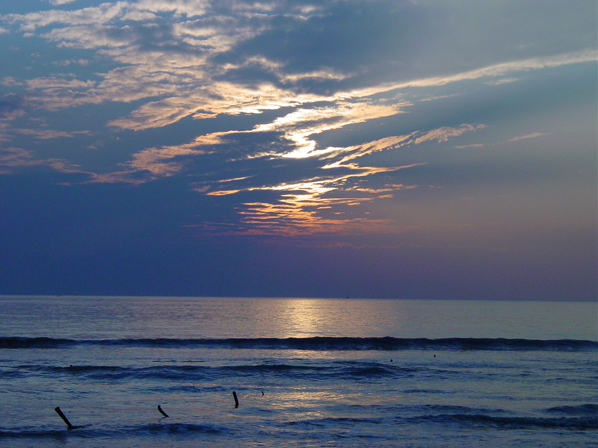
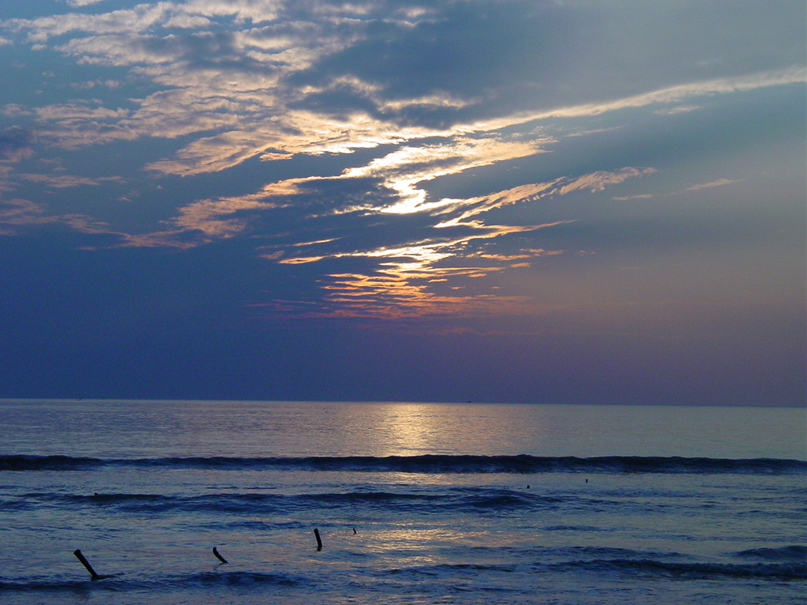

Etymology
The name Kuakata originated from the word 'kua' — the Bengali word for "well" which was dug on the seashore by the early Rakhine settlers(Burmese tribes) in quest of collecting drinking water.[4] They landed on the Kuakata coast in the 18th century after being expelled from Arakan (Myanmar) by the Burmese extremists .[5] Afterwards, it has become a tradition of digging wells in the neighbourhoods of Rakhaine tribes for water.Geography
Kuakata is situated in Kalapara Upazila, Patuakhali District.[6] It is about 320 kilometres (200 mi) south of Dhaka, the capital, and about 70 kilometres (43 mi) from the district headquarters.[1]
Demographics
According to the 2011 Bangladesh census, Kuakata had 2,065 households and a population of 9,077.[7]
Culture
Kuakata Beach Sunrise at Kuakata beach Sunset at Kuakata beach Kuakata is a place of pilgrimage for Hindu and Buddhist communities. Innumerable devotees arrive here at the festivals of 'Rush Purnima' and 'Maghi Purnima'. On these occasions the pilgrims take holy baths at the bay and participate in the traditional fairs.[1] One may visit a 100-year-old Buddhist temple where the statue of Goutama Buddha and two 200-year-old wells are located.
Tourism
The town Kuakata has sea beach named Kuakata Beach. Many tourists visit the place to see the beach although it hasn’t international recognition like Cox's Bazar Beach but it is popular in Bangladesh. There are many places tourist visit such as -
.jpg)
 
From top: Fishing, Sunset at Kuakata beach, Buddhist temples, Sea shore, Mangrove forest and Kuakata Grand Hotel & Sea Resort

From top: Fishing, Sunset at Kuakata beach, Buddhist temples, Sea shore, Mangrove forest and Kuakata Grand Hotel & Sea ResortNickname: Daughter of Sea (সাগরকন্যা)